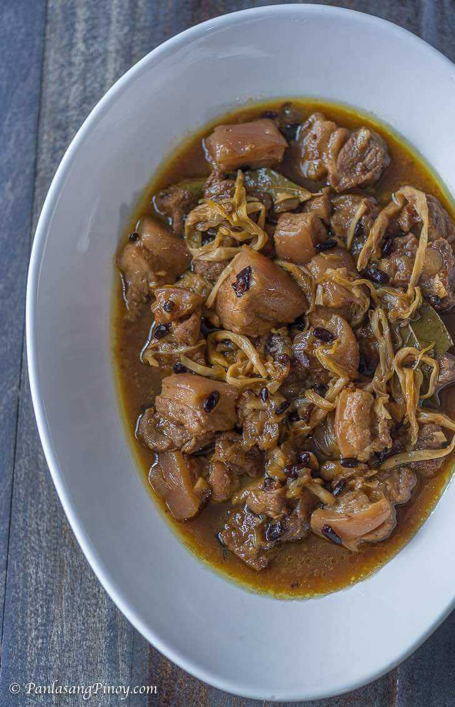
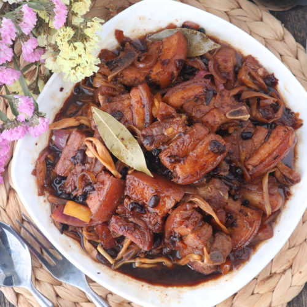

Pork Humba
Pork Humba (Filipino braised pork)
Humba is a dish of tender pork, salted black beans, and an assortment of spices. With its deep flavor palate and numerous ingredients, it is the perfect combination of sweet and savory –– two such flavors that Filipinos adore. Chinese-Filipino cuisine has been a part of our culture for decades. Since pre-colonial times when traders…
Humba is a dish of tender pork, salted black beans, and an assortment of spices. With its deep flavor palate and numerous ingredients, it is the perfect combination of sweet and savory –– two such flavors that Filipinos adore.
THE HUMBA
Ingredients
- Pork belly
- Pineapple juice
- Salted black beans
- Soy sauce
- Vinegar
- Banana blossoms
- Dried bay leaves
- Brown sugar (alternatively, you can use palm sugar –– just not white! Brown sugar has a less emphatic sweetness, and also operates as a natural thickener for your sauce)
Let’s prepare the ingredients for your humba! Dice one large onion and mince 5 cloves of garlic. You will also need these other following ingredients:
Directions
- In a hot cooking pot, toss in your pork belly and let it cook until it browns. Add in the onion and garlic slices you have and cook, until your onions soften. Then, add in your 2 tablespoons of soy sauce, peppercorn, and bay leaves. 
- Next, pour in 1 cup of pineapple juice and bring your humba to a boil. Cover the pan and let your dish simmer until your pork becomes tender. If you feel like it's getting a little too dry for your taste, feel free to add water in as well. This should take about 30 to 40 minutes.
- When that time has passed, add in 2 tablespoons of vinegar and wait for your mixture to re-boil. Let your dish simmer for about 3 minutes, then spoon in the salted black beans. Add in your brown sugar as well, then give your humba 5 minutes more.
- Lastly, take your dried banana blossoms and toss them into the pot. Cook all of your humba ingredients together for the last 5 to 8 minutes.
- Turn the heat off the stove and transfer your pork humba to a serving plate. Serve this dish with copious amounts of rice; it’s bound to be a hit! Share and enjoy it with the rest of your family today!
NOTE 1:
If pork belly has a lot of fat, separate the fatty part from the leaner part. Sear the fatty part first to render the fats. Sear the leaner meat for shorter time so it will not dry up and become chewy.
NOTE 2:
If using dried fermented black beans, soak it a bit and rinse before adding as it may be too salty. If using the canned ones with liquid, drain the liquid.